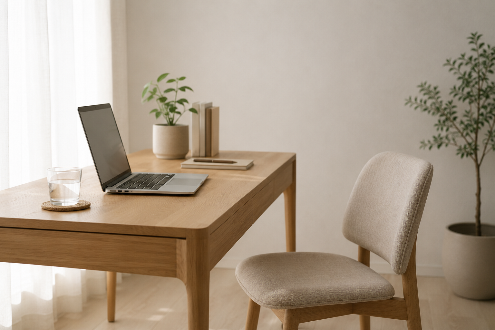

REMOTE
通勤していた分が、
まるごと消えている。
在宅勤務になって体型が変わったという人は多い。食事が変わったわけではなく、1日の歩数が数千歩減っているだけです。

先に結論です。まずジムを探さないでください。失われたのは運動ではなく日常の移動なので、そこを戻すほうが早い。1日15分の散歩と1時間ごとの立ち上がりで、状態は変わります。
失われている量
| 項目 | 出勤時 | 在宅時 |
|---|---|---|
| 1日の歩数 | 6,000〜10,000歩 | 1,000〜3,000歩 |
| 立っている時間 | 2〜4時間 | 30分以下 |
| 階段の上り下り | 数回 | ほぼ0 |
| 姿勢が変わる回数 | 多い | ずっと同じ |
数字は目安です。ここで問題なのは消費カロリーより、ずっと同じ姿勢でいることです。

家でできる最低ライン
まずやること
- 1時間ごとに立ち上がる。トイレでも水を取りに行くでも構いません。座り続けるのが最も悪い
- 昼に15分歩く。外に出るのが理想ですが、家の中を歩くだけでも違います
- 始業前に肩を回す。その日の姿勢が決まります
- 画面の高さを上げる。ノートPCを直置きすると、必ず首が前に出ます
この4つは運動ではなく生活の調整です。ここを飛ばしてジムに通っても、残りの23時間が同じままなので変わりません。
巻き肩と首が最初に出る
在宅勤務で最も変わるのが姿勢です。ノートPCを直置きすると画面が低く、首が前に出て肩が内側に入ります。この状態が数ヶ月続くと、デコルテが埋まり、背中が丸く見えます。
ドレスで最も見える部位がここなので、体重より優先度が高い項目です。
運動を足すなら
移動がない生活に「移動が必要な運動」を足すと続きません。家で完結する形式のほうが、在宅勤務の人には合っています。

3社の違いはオンラインフィットネスの比較にまとめています。
食事も崩れやすい
在宅勤務のもうひとつの問題が、キッチンが常に近いことです。間食が増え、そして昼食が適当になります。用意されているものがあると、この2つが同時に解決します。
次に読む
脚のむくみは立ち仕事の人の脚のむくみ対策（座りっぱなしも原因は同じです）、続かなかった経験があるなら原因別の対処に。